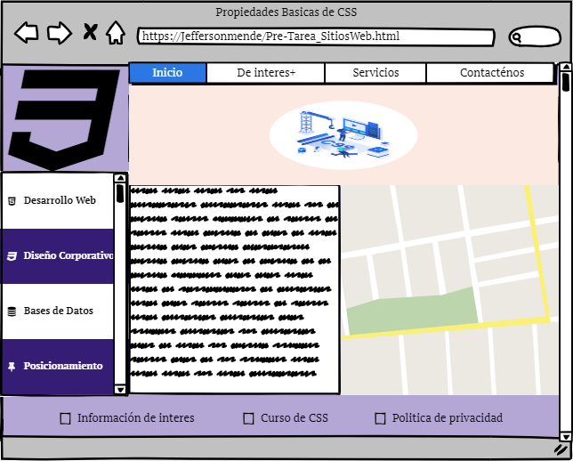

MOCKUP DE PÁGINA INDEX.HTML
¿Qué es un mockup?
Son fotomontajes muy utilizados en el mundo del diseño web y el diseño gráfico para simular un proyecto real.
Qué es mockup en español
Y quizá te preguntes, ¿mockup qué es en español?
Literalmente en nuestro idioma “mock up” quiere decir maqueta.
Para qué sirve
Se usan para reproducir cómo sería la realidad a una escala más pequeña y hacer modificaciones en esta maqueta para ver cómo quedarían estos cambios en el proyecto original de manera aproximada.
Se pueden hacer para logotipos, tarjetas de visita, folletos o páginas web.
En el ámbito online esto nos sirve a los diseñadores web y gráficos para mostrar al cliente cómo puede quedar el diseño de su proyecto.
Usos del mock up en el diseño web estratégico
Cada vez más se está extendiendo su uso para realizar estrategias de marketing digital y embudos de ventas.